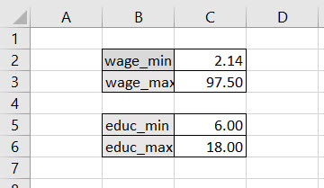
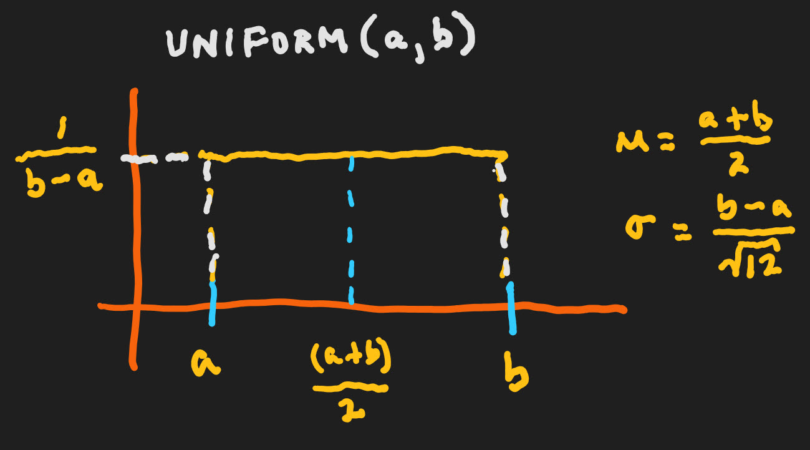
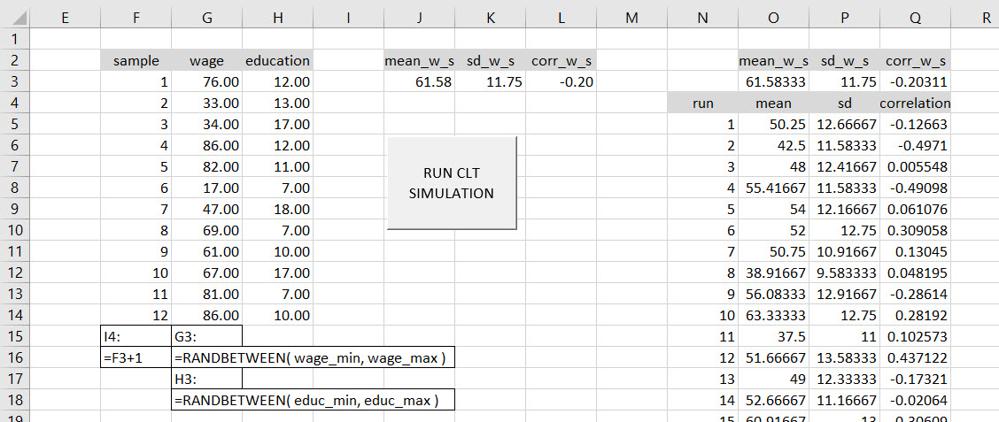
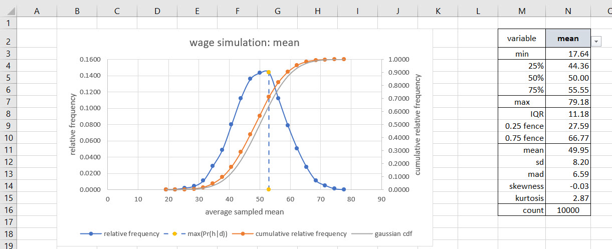
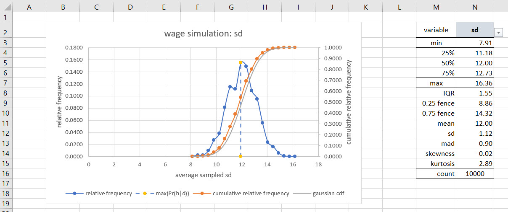
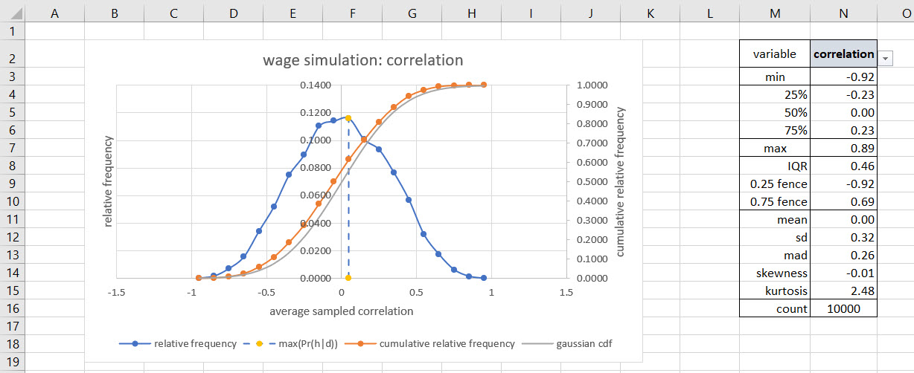
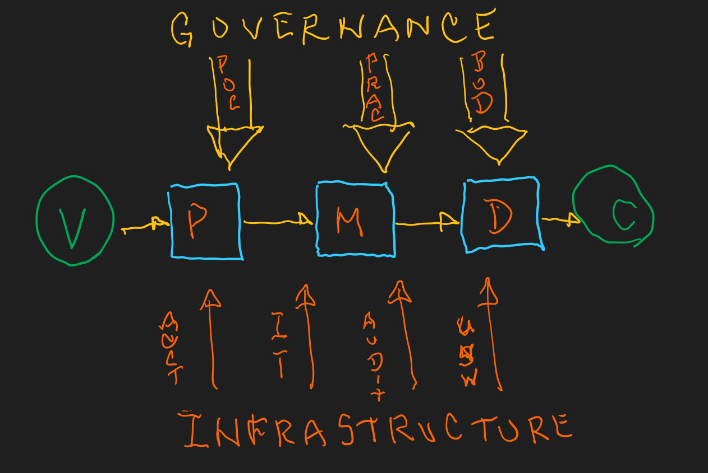
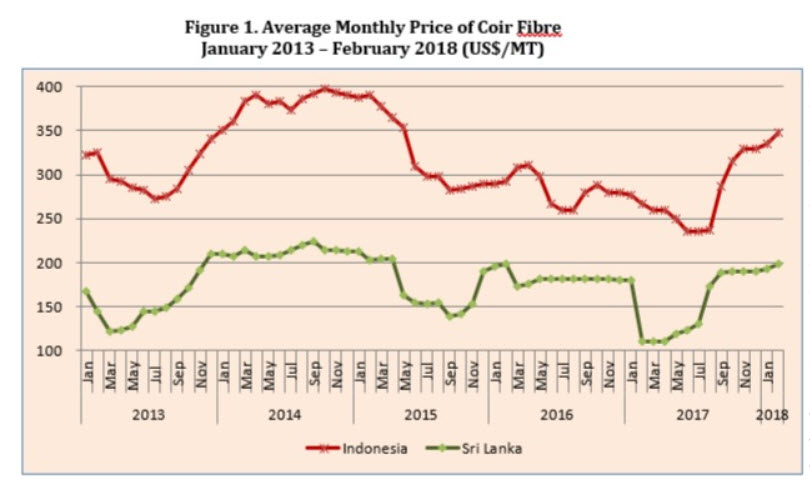

Chapter 8 Gauss’s robots go rogue
8.1 Spreadsheets? Really?
Yes, emphatically! George Gilder says we should waste transistors (that is chips).11 Gilder makes the fairly obvious point that we must use transistors (lots of them in an integrated circuit) or go out of business. They are ubiquitous. And arrived everywhere in a very short amount of time to boot. If you do not use them you lose control of your cost structure. Anything you build will be too expensive, too heavy, too big, too slow, too lacking in quality.
The same idea goes with Michael Schragge builds on Gilder’s ironic hyperbole about transistors and analogizes that we should “waste simulations.”12 If we do not so-called waste prototyping, rapid development, simulating potential problems, solutions, we will also go out of business. We must simulate until we drop! The alternative is that we will miss the one opportunity to improve or the one error that eliminates us. Of course the point he makes is that it iss not a waste, rather we should never shy away from working the problem, simulating the art of the possible.
So what is the value added of a prototype, which is simply a working model? It is about information, and information is a surprise, a deviation from a trend. Schragge believes that testing a hypothesis just gets us to the point of saying we seem, in probability that is, to have a trend going on here. In the world of growth, opportunity, error and ignorance, having a trend is barely the beginning of our journey. It is the deviation from the trend that matters.
Are we still talking about spreadhseets? Schragge quotes Louis Pasteur: “Chance favors the prepared mind.” Here the prepared mind is a product of simulations, the rapidly developed prototypes, Fleming used agar and discovered penicillin – completely unexpected! Dan Bricklin developed the spreadsheet IBMDOS/Apple IIe program Visicalc.13 As a complete surprise this product was able to be used by millions of people to rapidly simulate other products and services. Steve Jobs credited Visicalc with the success of the Apple IIe and the Macintosh in 1985. IBM credited it with the success of the PC. Now people had a reason to buy the PC.
Using Visicalc we were able 40 years ago to build practical, plottable, usable option pricing models which transparently allowed us to visualize the calculations directly. Financial analysts built interactive pro forma balance sheet, income statements, and cash flow statements fed from managers’ expectations, scenarios, and expert knowledge of markets. These models literally paid for themselves in days, not years. The main criterion for innovation success has always been the customer’s payback, not the investors. How long did it take for the customer to recoup her investment? That’s the innovation criterion. The spreadsheet is a sophisticated scratchpad some have used to be a production ready system.
But what is the most important message? A working prototype should be a sandbox where everyone is willing to get in and play. It has at least to be durable enough to get to the first slate of useful comments and suggestions for further improvement. Development continues! Rick Lamers recently open sourced his Grid Studio spreadsheet product with deep integration with Python.
Yes, let’s continue to play.
8.2 An auspicious result again?
Instead of nearly 3,000 observations about wages and educational attainment, suppose we only believed that the minimum and maximum wage rate and years of education are credible. This is about the least amount of information we could possible cull from our knowledge of labor markets. If we simulate samples from these markets a lot of times (10,000 let’s say) will be get our Gaussian auspicious results again?
To play in this sandbox, let’s think a bit about what having just maximum and minimum data means. Here is that dataset.

It really does not get simpler than this! Our thought experiment, as we waste Gilder transistors over this, is to consider wages and years of educational attainment to be equally likely within the maximum and minimum intervals in our truly sparse data set. This is an example of the uniform distribution. Here is a sketch of the distribution.

There are two parameters only: \(a\) is the minimum and \(b\) is the maximum of the outcomes \(x=X\) on the horizontal axis. The probability that any outcome occurs between \(a\) and \(b\) is just this,
\[ Pr(x \mid a, \, b) = \frac{1}{b-a} \]
8.3 The most uninformative distribution
Suppose we have no idea about the shape of the distribution of our stock portfolio. We do know that the value of the portfolio can range from $10,000 to $15,000 in a 52 week period. What is mean and standard deviation you can expect in this situation?
We use the uniform distribution to model our diffuse beliefs. For this problem \(a = 2.14\), \(b = 97.5\). The population mean of the uniform distribution is
\[ \mu = \frac{(a+b)}{2} = \frac{2.14 + 97.5}{2} = 49.82 \]
The population standard deviation is
\[ \sigma = \frac{(b-a)}{\sqrt{12}} = \frac{(97.5 - 2.14)}{3.46} = 27.53 \]
Why? Press this button to flex your calculus-based analytical muscles!
8.4 Simulate until morale improves!
 Do we notice a change from the previous model of last week. We compare column F for the two models. Indeed we made an error: we failed to model (and it’s an easy model) the sample index from 1 to 12. We missed a sample. Last week there were only 11 samples taken 10,000 times. Well, this week we adjust the model and move on. An improvement here would be to calculate and simulate education means and standard deviations. This is a good exercise and all it takes is to put the cursor into cell L3 and insert two columns using the Home > Insert feature. Then do the same at cell Q3. We then fill in the relevant formulas and check the name manager to be sure the ranges are intact. Then we rerun the model
8.5 Is it true that Gauss is in the house again?

It definitely appears to be so. A near 3.00 mesokurtotic relative frequency distribution with near zero skewness match with a mean that is almost exactly the median all point to a Gaussian distribution.
8.6 And again?

This one’s a little rugged do we think? Yes, and probably due to sampling error with square root calculationg. We recall that the standard deviation is the square root of the variance, that the variance is the average of the sum of squared deviations of wage from its arithmetic mean. But all in all it looks Gaussian for the same reasons as the mean.
8.7 The Association

Correlation is not Causation
True or False? In our simple model, \(E \rightarrow W\) where \(E\), education, is represented and measured by years of education starting with first grade, and \(W\), is the median USD per hour wage rate. This is causation. There is an argument of antecedent probability that a highly plausible correlation supports the conjecture (here again, theory, hypothesis) that education causes wages. But by the application of the mind projection fallacy, theory is not all of reality. It can be refuted (we remember, maybe with some trepidation the logical consistency of modus tollens). In any case, we might conjecture on the conjecture that correlation is least certain of all findings.
8.8 A tale of coir
Here is a round of work steps we can perform to repurpose our model with coir data to help solve a procurement question.
8.8.1 Business Situation
We imagine we work for an organization which manufactures activated carbon for filtration systems. We reduce coconut fiber (coir) to carbon using a chemical process to make activated carbon. We are about to contact 12 vendors for price quotes.
Here is a quickly rendered picture of the organization’s supply chain from vendors \(V\) to customers \(C\).

The flow of tasks ranges from vendor \(V\) through procurement \(P\), manufacturing \(M\), distribution \(D\), all driven by the customer \(C\). Political and international relations, regulators, and the Board of Directors \(BoD\) govern the management of the processes and relationships. Infrastucture supports the processes.
8.8.2 Business Questions
What is a reasonable range of coir prices we might use to write a contract for coir delivery with a potential vendor?
What prices would be considered too high (potential price gouging) ot too low (potential evidence of poor quality coir)?
Both of these questions bear on our organization’s tolerance for risk. This tolerance is buried in the Delegation of Authority (DoA) policy understanding between the organization’s governing board and the managers the board hires. The DoA helps to align manager actions with organizational preferences and requirements.
8.8.3 Data
We visit the coconut community trade organization site to get a range of possible coir prices. There are two series:. The price difference (basis) is due to insurance and freight charges in the distance between the two countries. Apparently the direction of trade is from west to east.
Here is a graph taken from the site. It only shows recent history through 2018 unfortunately. A task will be to get more recent data. But for now this will work for us.

Our manufacturing facility is in Southeast Asia, so we would be taking delivery of coir closer to Indonesia than to Sri Lanka, thus we choose the Indonesian FOB price series for analysis. We keep in mind the International Commercial Terms of trade and the definition of FOB.
Here is are our findings.
 The map shows the direction of trade as west to east. Indonesian prices are higher than Sri Lankan prices by a range of USD 130 to 170 per MT. This is called physical price basis and is due to freight charges and the differential between the countries and their supply and demand for coir.
The map shows the direction of trade as west to east. Indonesian prices are higher than Sri Lankan prices by a range of USD 130 to 170 per MT. This is called physical price basis and is due to freight charges and the differential between the countries and their supply and demand for coir.
8.8.4 Analysis
We will use the uniform distribution to model 12 vendor price quote responses. Why? Mainly because we are agnostic about the shape of the distribution of possible prices. The only thing we know is a maximum and minimum of prices.
Our tolerance for error is set by corporate policy at 5%. This means that we are looking for the plausibility of prices that center around the most probable price plus or minus \(100 \times (1.00 - 0.05)/2 =47.5\)%. We will call this the *high density probability interval**.
We simulate 12 vendor price responses many times to generate a distribution of mean prices across the 12 vendors. This move recalls Schrage’s waste simulations which we will interpret as: we will not sign a contract until we exhaust the possibilities of price movements, or ourselves, whichever comes first.
8.8.5 Results
What is our level of credibility regarding the Indonesian range of coir prices?
What low price range is consistent with this data? Why should we be wary?
What low price range is consistent with this data? Again, do we have any reason to be wary?
What if we were to model the difference (basis) between Indonesia and Sri Lanka? How different are the two prices? We will come back to this question in future rounds!
8.9 Endnotes
See Gilder’s comments here. He goes on to a further idea: build billions of 1-chip interconnected systems (our mobile phones that are really computers) and waste chips that way instead of manufacturing billion chip data centers. According to Moore’s law we will eventually get to a near zero-cost chip.↩
Here is a taste of Schrage’s points of view. He compiled the “wasting prototyping” paradigm into this book a couple of decades ago.↩
Here is a summary of his work. His innovation with Visicalc was to transform 20 hours of work into 15 minutes, almost of play at the time. Visicalc first ran on the Apple IIe. Dan is working on a web-based WikiCalc these days.↩